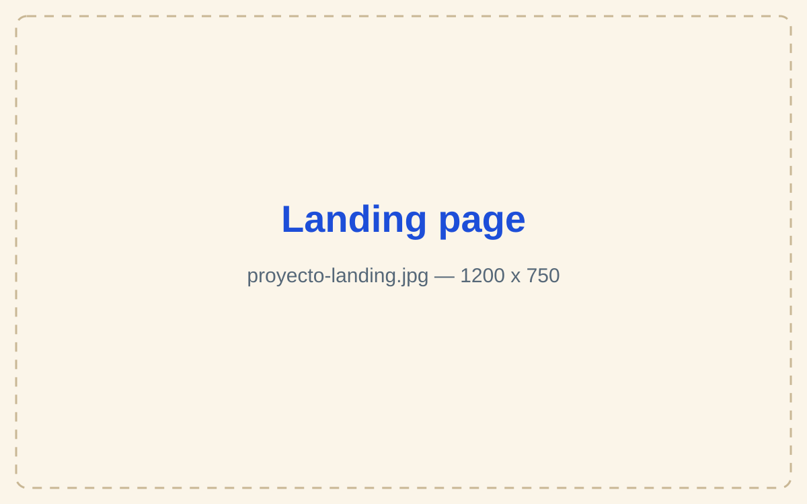
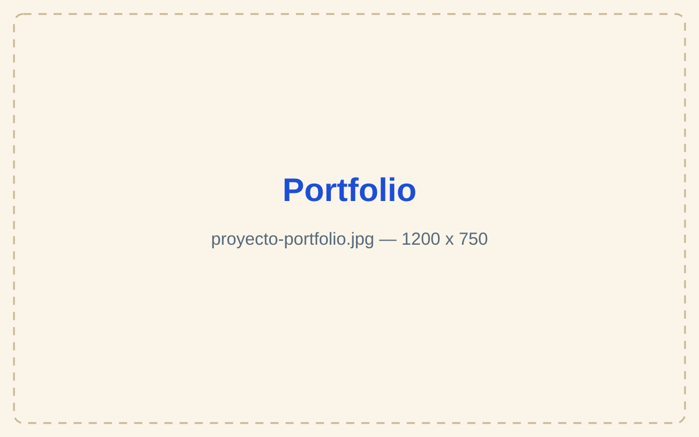
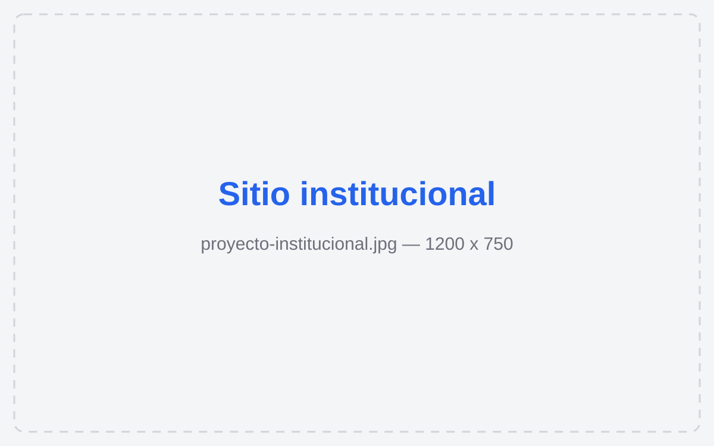

Diseño web
Cómo se ve y cómo se usa tu sitio.
Pensado desde cero para tu negocio: claro de leer, fácil de recorrer y distinto al de tu competencia.
Disponible para nuevos proyectos
Diseño y desarrollo de sitios web hechos a medida para que tu negocio se vea serio, se distinga del resto y convierta consultas en clientes.
Servicios
Cómo se ve y cómo se usa tu sitio.
Pensado desde cero para tu negocio: claro de leer, fácil de recorrer y distinto al de tu competencia.
El diseño convertido en un sitio real.
Rápido, prolijo y bien construido. Se adapta a cualquier pantalla, del celular al monitor grande.
Para cuando te buscan en Google.
No solo te hago la web: la optimizo para que aparezca cuando buscan lo que hacés y te puedan encontrar.
La web no termina el día que se publica.
La mantengo al día, actualizada y funcionando todos los días, sin que vos tengas que ocuparte.
Proyectos
Landing pages, portfolios y sitios institucionales que diseñé y desarrollé.



Proceso
Una llamada corta para entender tu negocio, tu momento y qué necesitás resolver.
Detectamos qué te está frenando y qué solución realmente conviene.
Alcance claro, tiempos concretos y una propuesta sin sorpresas.
Avances desde la primera semana, transparencia y foco.
Publicamos, damos soporte y sostenemos la evolución de tu herramienta.
Contacto
En 20-30 minutos de consulta revisamos qué necesitás y cómo podemos avanzar de la mejor manera.
¿Preferís algo más rápido?
Escribime por WhatsApp